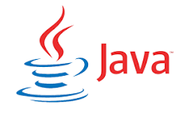

Explore the contents here

HTML
HTML, which stands for Hypertext Markup Language, is the standard markup language used to create and design web pages. It provides a structure for content on the internet, allowing developers to define and organize various elements such as text, images, links, forms, and more. HTML uses a system of tags, like the <p> tag, to structure and format content, making it readable and presentable in web browsers. Understanding HTML is fundamental for anyone involved in web development, as it serves as the backbone for building the foundation of websites and applications.
Click here to visit an example website.
CSS
Cascading Style Sheets is a stylesheet language used to describe the presentation of a document written in HTML or XML, including colors, layouts, and fonts. With CSS, you can control the appearance and formatting of your web pages, making them visually appealing and responsive to different devices. CSS operates on a cascading principle, where styles can be inherited or overridden, allowing for consistent and flexible design across a website.

Javascript
JavaScript is a versatile and powerful programming language that enables dynamic and interactive web development. It is commonly used to enhance user interfaces, manipulate the Document Object Model (DOM), and add behavior to web pages. With JavaScript, developers can create features like form validation, interactive animations, and real-time updates without requiring a page reload. As a client-side scripting language, JavaScript executes in the user's browser, making it an essential tool for creating modern and engaging web applications.

JAVA
Java is a high-level, object-oriented programming language that was developed by Sun Microsystems in the mid-1990s. Known for its platform independence, Java programs can run on any device that has the Java Virtual Machine (JVM) installed, making it a versatile and widely-used language for web development, mobile applications, enterprise systems, and more. The language emphasizes simplicity, portability, and security, making it suitable for a variety of applications. Java's popularity is also driven by its extensive standard library, strong community support, and the ability to build robust, scalable software solutions.

C/C++
C and C++ are powerful programming languages widely used in software development. C, created in the early 1970s by Dennis Ritchie at Bell Labs, is known for its low-level features and efficient memory manipulation capabilities. It serves as the foundation for many operating systems and has influenced the development of other languages. C++, an extension of C developed by Bjarne Stroustrup in the late 1970s, introduces object-oriented programming (OOP) features. It combines the efficiency of C with additional features like classes, inheritance, polymorphism, and encapsulation. C++ is widely used in various domains, including system programming, game development, and application software. Both C and C++ provide a high level of control over hardware resources, making them preferred choices for performance-critical applications. Learning C and C++ is valuable for understanding system-level programming, algorithm development, and gaining a solid foundation for other programming languages.

python
Python is a versatile, high-level programming language known for its readability and simplicity. It was created by Guido van Rossum and first released in 1991. Python's design philosophy emphasizes code readability and ease of use, making it an excellent choice for beginners and experienced developers alike. With a large standard library and a thriving community, Python supports multiple programming paradigms, including procedural, object-oriented, and functional programming. It is widely used in various domains, such as web development, data science, artificial intelligence, automation, and more.

SQL Basics
SQL, which stands for Structured Query Language, is a specialized programming language designed for managing and manipulating relational databases. It serves as the standard means of interacting with databases, enabling users to perform various operations such as querying data, inserting, updating, and deleting records. SQL provides a declarative syntax, allowing users to express what they want to achieve without specifying how to achieve it. Common SQL commands include SELECT (for querying data), INSERT (for adding new records), UPDATE (for modifying existing records), and DELETE (for removing records). Understanding SQL is essential for database administrators, developers, and anyone working with data-driven applications.